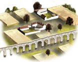
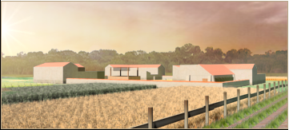

Imperium
Imperium Irrigation Ditches (Crops) chain
5 levels, each replacing the one before it — you upgrade in place rather than building alongside.
Irrigation Ditches (Crops) → Basin Irrigation (Crops) → Canal Network (Crops) → Irrigation Aqueducts (Crops) → Irrigated Great Estates (Crops)
Pictures are the game's own building art. Where a culture ships none of its own, the game falls back to another culture's, and that is what is shown here.
Levels at a glance
| Level | Cost | Build time | Minimum settlement | Upgrades to | Level | Cost | Build time | Minimum settlement | Upgrades to | ||
|---|---|---|---|---|---|---|---|---|---|---|---|
| Irrigation Ditches (Crops) | 1,500 | 3 | town | Basin Irrigation (Crops) | Basin Irrigation (Crops) | 3,000 | 5 | large town | Canal Network (Crops) | ||
| Canal Network (Crops) | 5,000 | 7 | city | Irrigation Aqueducts (Crops) | Irrigation Aqueducts (Crops) | 7,500 | 9 | large city | Irrigated Great Estates (Crops) | ||
 | Irrigated Great Estates (Crops) | 10,000 | 11 | huge city | — |
Costs in denarii, build time in turns.
Irrigation Ditches (Crops)

Simple ditches irrigate farmland, enabling basic cultivation
Civilization begins with irrigation, and irrigation begins with a ditch. With these channels directing precious water from nearby rivers or lakes to our fields, we are advancing beyond mere subsistence. With food to spare we may attract more people to the region. The maintenance of these waterworks should not be neglected and will cost some tax revenue.
Note: Some levels may have both positive and negative growth modifiers due to modding limitations. All effects apply, so +3 growth and -0.5 growth means +2.5 total growth.
Strategy
Irrigated farming is one of the best farming options in terms of growth potential and income. Every level slightly increases maintenance costs (tax penalty). Its farming bonus (+1 = +80 income on average & +0.5 growth) is increased if the region has grain resource, and sulphur has the same effect on tiers 3-5. Irrigated farming offers a trade bonus for cash crops (fruits, olives, grapes, papyrus, cotton, flax, dates), increased at tier 5. At tiers 4-5, the slave trade hub resource enables a tax bonus.
Availability
Irrigated farming is available only in regions with water sources (river, lake, springs, oasis). Not available in sub-arctic, alpine, oceanic, temperate and continental climates. Also not available in forest and wetlands terrain.
Limited to:
Tier 5: river valley, floodplains, grassland
Tier 4: mountain valley, plateau
Tier 3: hills
Tier 2: steppe, desert, small islands/rocky coast
Tier 1: mountains, karst terrain
| Cost | 1,500 denarii | Build time | 3 turns | Minimum settlement | town |
| Upgrades to | Basin Irrigation (Crops) |
What it does
- -1 taxable income (player only)
Show 4 effects that apply only in the circumstances shown
- +2 farming level — only when
not resource grain - +3 farming level — only when
resource grain - +1 trade income — only when
resource fruits or resource olive_oil or resource wine or resource papyrus or resource cotton or resource flax or resource dates - -1 taxable income — only when
building_present_min_level irrigated_farming irrigation_ditches and not is_player
Irrigation Aqueducts (Crops)

Irrigation aqueducts support burgeoning estates
Though our waterworks were already extensive, good land remained underutilised just beyond the reach of canal, sluice and waterwheel. To properly exploit this outlying land, advanced engineering was required. Aqueducts were raised to tap into even more sources of freshwater and bring it where it was lacking. The fields are increasingly worked by slaves who also maintain the vast structures watering the land.
Note: Some levels may have both positive and negative growth modifiers due to modding limitations. All effects apply, so +3 growth and -0.5 growth means +2.5 total growth.
Strategy
Irrigated farming is one of the best farming options in terms of growth potential and income. Every level slightly increases maintenance costs (tax penalty). Its farming bonus (+1 = +80 income on average & +0.5 growth) is increased if the region has grain resource, and sulphur has the same effect on tiers 3-5. Irrigated farming offers a trade bonus for cash crops (fruits, olives, grapes, papyrus, cotton, flax, dates), increased at tier 5. At tiers 4-5, the slave trade hub resource enables a tax bonus.
Availability
Irrigated farming is available only in regions with water sources (river, lake, springs, oasis). Not available in sub-arctic, alpine, oceanic, temperate and continental climates. Also not available in forest and wetlands terrain.
Limited to:
Tier 5: river valley, floodplains, grassland
Tier 4: mountain valley, plateau
Tier 3: hills
Tier 2: steppe, desert, small islands/rocky coast
Tier 1: mountains, karst terrain
| Cost | 7,500 denarii | Build time | 9 turns | Minimum settlement | large city |
| Upgrades to | Irrigated Great Estates (Crops) |
What it does
- -4 taxable income (player only)
Show 5 effects that apply only in the circumstances shown
- +8 farming level — only when
not resource grain and not sulphur_building_supply - +9 farming level — only when
resource grain or sulphur_building_supply - +1 trade income — only when
resource fruits or resource olive_oil or resource wine or resource papyrus or resource cotton or resource flax or resource dates - +5 taxable income — only when
slave_trade_building_supply - -4 taxable income — only when
building_present_min_level irrigated_farming irrigation_aquaducts and not is_player
Basin Irrigation (Crops)

Using basins to flood and fertilize fields boosts crop yields
As water is plentiful in this region, our farmers have begun to construct embankments around fields nearest to rivers to create basins that can be strategically flooded. Certain crops like wheat, barley and pulses thrive when they get their feet wet. The water streaming into these basins also deposits river silt, fertilizing the fields. While these basins produce food crops in bulk, higher lying fields are used for other crops. The embankments are vulnerable to erosion and need constant maintenance.
Note: Some levels may have both positive and negative growth modifiers due to modding limitations. All effects apply, so +3 growth and -0.5 growth means +2.5 total growth.
Strategy
Irrigated farming is one of the best farming options in terms of growth potential and income. Every level slightly increases maintenance costs (tax penalty). Its farming bonus (+1 = +80 income on average & +0.5 growth) is increased if the region has grain resource, and sulphur has the same effect on tiers 3-5. Irrigated farming offers a trade bonus for cash crops (fruits, olives, grapes, papyrus, cotton, flax, dates), increased at tier 5. At tiers 4-5, the slave trade hub resource enables a tax bonus.
Availability
Irrigated farming is available only in regions with water sources (river, lake, springs, oasis). Not available in sub-arctic, alpine, oceanic, temperate and continental climates. Also not available in forest and wetlands terrain.
Limited to:
Tier 5: river valley, floodplains, grassland
Tier 4: mountain valley, plateau
Tier 3: hills
Tier 2: steppe, desert, small islands/rocky coast
Tier 1: mountains, karst terrain
| Cost | 3,000 denarii | Build time | 5 turns | Minimum settlement | large town |
| Upgrades to | Canal Network (Crops) |
What it does
- -2 taxable income (player only)
Show 4 effects that apply only in the circumstances shown
- +4 farming level — only when
not resource grain - +5 farming level — only when
resource grain - +1 trade income — only when
resource fruits or resource olive_oil or resource wine or resource papyrus or resource cotton or resource flax or resource dates - -2 taxable income — only when
building_present_min_level irrigated_farming basin_irrigation and not is_player
Canal Network (Crops)

A large canal network enables large-scale agriculture
The state has decreed that new irrigation works be put into place in this region. With this support, a network of canals has been built beyond anything the farmers could have managed on their own. Not any one person understands the full workings of the great network of dikes, sluices, and embankments. Our waterworks have evolved from a humble ditch into a symbol of the power of the state. And also much like the state, it has grown very expensive to maintain.
Note: Some levels may have both positive and negative growth modifiers due to modding limitations. All effects apply, so +3 growth and -0.5 growth means +2.5 total growth.
Strategy
Irrigated farming is one of the best farming options in terms of growth potential and income. Every level slightly increases maintenance costs (tax penalty). Its farming bonus (+1 = +80 income on average & +0.5 growth) is increased if the region has grain resource, and sulphur has the same effect on tiers 3-5. Irrigated farming offers a trade bonus for cash crops (fruits, olives, grapes, papyrus, cotton, flax, dates), increased at tier 5. At tiers 4-5, the slave trade hub resource enables a tax bonus.
Availability
Irrigated farming is available only in regions with water sources (river, lake, springs, oasis). Not available in sub-arctic, alpine, oceanic, temperate and continental climates. Also not available in forest and wetlands terrain.
Limited to:
Tier 5: river valley, floodplains, grassland
Tier 4: mountain valley, plateau
Tier 3: hills
Tier 2: steppe, desert, small islands/rocky coast
Tier 1: mountains, karst terrain
| Cost | 5,000 denarii | Build time | 7 turns | Minimum settlement | city |
| Upgrades to | Irrigation Aqueducts (Crops) |
What it does
- -3 taxable income (player only)
Show 4 effects that apply only in the circumstances shown
- +6 farming level — only when
not resource grain and not sulphur_building_supply - +7 farming level — only when
resource grain or sulphur_building_supply - +1 trade income — only when
resource fruits or resource olive_oil or resource wine or resource papyrus or resource cotton or resource flax or resource dates - -3 taxable income — only when
building_present_min_level irrigated_farming canal_network and not is_player
Irrigated Great Estates (Crops)

Vast, slave-worked estates that are highly productive but cause social unrest
Over time these lands have needed much investment to make them truly profitable, and so those who can invest the most have come to acquire the land. Here on their great estates, our elites see their wealth increase, thanks to thousands of slaves labouring well-watered fields stretching to the horizon. The overseers have become experts in disciplining slaves and maintaining the irrigation works built over generations. The dispossessed farmers have had no choice but to seek employment in the cities.
Note: Some levels may have both positive and negative growth modifiers due to modding limitations. All effects apply, so +3 growth and -0.5 growth means +2.5 total growth.
Strategy
Irrigated farming is one of the best farming options in terms of growth potential and income, though potential is limited for factions unable to build great estates. Every level slightly increases maintenance costs (tax penalty). Its farming bonus (+1 = +80 income on average & +0.5 growth) is increased if the region has grain resource, and sulphur has the same effect on tiers 3-5. Irrigated farming offers a trade bonus for cash crops (fruits, olives, grapes, papyrus, cotton, flax, dates), increased at tier 5. At tiers 4-5, the slave trade hub resource enables a tax bonus.
Availability
Irrigated farming is available only in regions with water sources (river, lake, springs, oasis). Not available in sub-arctic, alpine, oceanic, temperate and continental climates. Also not available in forest and wetlands terrain.
Limited to:
Tier 5: river valley, floodplains, grassland
Tier 4: mountain valley, plateau
Tier 3: hills
Tier 2: steppe, desert, small islands/rocky coast
Tier 1: mountains, karst terrain
| Cost | 10,000 denarii | Build time | 11 turns | Minimum settlement | huge city |
What it does
- -1 population growth (player only)
- -2 public order (happiness) (player only)
Show 8 effects that apply only in the circumstances shown
- +10 farming level — only when
not resource grain and not sulphur_building_supply - +11 farming level — only when
resource grain or sulphur_building_supply - +2 trade income — only when
resource fruits or resource olive_oil or resource wine or resource papyrus or resource cotton or resource flax or resource dates - +10 taxable income — only when
slave_trade_building_supply - -5 taxable income — only when
not slave_trade_building_supply and is_player - -1 population growth — only when
building_present_min_level irrigated_farming great_estates and not is_player - -5 taxable income — only when
not slave_trade_building_supply and building_present_min_level irrigated_farming great_estates and not is_player - -2 public order (happiness) — only when
building_present_min_level irrigated_farming great_estates and not is_player
What the shorthands in those conditions stand for (2)
These are the mod's own, quoted from the game files unchanged.
| Shorthand | Stands for | Shorthand | Stands for | Shorthand | Stands for |
|---|---|---|---|---|---|
slave_trade_building_supply | resource slave_trade or hidden_resource slave_supply_built factionwide | sulphur_building_supply | resource sulphur or hidden_resource sulphur_supply_built factionwide |